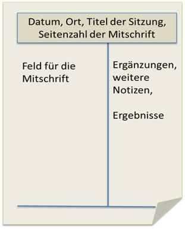

Informationsbeschaffung
Notizen machen
1) Zeigen Sie an konkerten Beispielen, wie Sie sich Notizen machen.
Meine Notizen sind normalerweise so kurz gehalten wie möglich. Als ich beispielsweise in einem Vortrag über Speedreading sass, habe ich lediglich die wichtigsten Details wie Definition notiert, damit ich mich auf den Vortrag konzentrieren kann. Ich schreibe ausserdem keine ganzen Sätze
(Speedreading ist eine Methode, mit welcher man schneller Texte lesen kann, und trotzdem alle Informationen behält). Stattdessen schreibe ich meine Notizen in diesem Style: Speedreading, schnell lesen, Alle Infos. Hierbei verwende ich auch speziellere Abkürzungen, welche unter Umständen nur ich verstehe, da ich so besser mit dem Sprechtempo mithalten kann. (Unter Umständen = u.U.)
2) Recherchieren Sie im Internet Informationen zu guten Notizen. Was sollte man für gute Notizen beachten? Zeigen Sie diese Informationen auf.
Laut einer Seite, welche ich gefunden habe [5], gibt es 5 grosse Tips, welche man beachten sollte.
1. Notizen sollten mit der Hand verfasst werden, da sie so eher kurz und knapp sind, man den Inhalt besser aufnimmt, und man nicht versucht ist, die Notizen perfekt zu formulieren
2. Gute Stifte verwenden, weil diese viel angenehmer sind, und so schnellere Schreibgeschwindigkeiten zulassen.
3. Die Notizen mit eigenen Worten formulieren, und soweit möglich mit Schlüsselworten arbeiten. So bleiben die Notizen gleich besser im Kopf.
4. Farben zur Übersicht verwenden.
5. Den Notizen Struktur geben. Hierfür kann die Cornell-Methode verwendet werden, die auf dem folgenden Bild [6] aufgezeigt wird: 
3) Vergleichen Sie nun wiederum Ihre Notizen und reflektieren Sie Ihre Notiztechnik kritisch.
Meine Notiztechnik scheint recht gut zu sein, auch wenn ich einige der Tips nicht verwende oder nicht einmal ausprobiert habe. Zum Beispiel verwende ich normalerweise entweder einen Kugelschreiber oder meinen Laptop, was aber beides als recht suboptimal beschrieben wird. Ausserdem habe ich noch nie versucht, mit Farben zu arbeiten, es scheint aber ein logischer Schritt zu sein, um meine Notiztechnik zu verbessern. Die Cornell-Methode scheint ebenfalls eine gute Möglichkeit zu sein, mich zu verbessern.
Informationen strukturieren
1) Überlegen Sie sich, wie Sie Informationen strukturieren können. Versuchen Sie unterschiedliche Arten zu finden, und beschreiben Sie diese. Welche Art bevorzugen Sie? Begründen Sie und zeigen Sie Beispiele von Ihnen auf.
Die Arten, auf welche ich normalerweise meine Informationen strukturiere sind normale Notizen und Mind Maps. Die Normalen Notizen verwende ich, um schnell viele Informationen in eine praktische Grösse zu bringen. besonders bei Präsentationen und anderen Arten von gesprochenen Informationen kommt diese Art der Strukturierung oftmals zum Einsatz.
Dagegen verwende ich Mindmaps prinzipiell, um geschriebene Informationen übersichtlich zu verarbeiten. Muss ich Beispielsweise einen Sachtext zusammenfassen, mag ich es, Mindmaps zu verwenden, um die Informationen klar zu strukturieren. Oftmals bietet es sich an, die beiden Methoden im Tandem zu verwenden; Zuerst wird ein mündlicher Text mittels normaler Notizen in eine Praktische schriftliche Form gebracht, um dann per Mindmap nochmals besser strukturiert zu werden. Ich bevorzuge normalerweise normale Notizen, da ich besser darin, diese umzusetzen, und somit auch schneller zu Resultaten kommen kann.
2) Um Informationen zu strukturieren und später wieder zu ginden oder um Notizen zu machen, gibt es viele Hilfsmittel. Suchen Sie im Internet oder Appstore nach Hilfsmitteln, wählen Sie eins aus, und testen Sie dieses. Versuchen Sie, Notizen und Informationen mit dem ausgewählten Hilfsmittel zu erfassen und reflektieren Sie dieses. Wo unterstützt Sie das Tool oder was kann nicht erfüllt werden. Beschreiben Sie Ihre Erfahrungen und dokumentieren Sie Ihre Ergebnisse.
Ich habe mich an der Samsung-Integrierten Notizen-App versucht. Sie hat relativ simple Funktionen; Man kann "Notizkarten" erstellen, diesen einen Titel geben, und danach auf ihnen Notizen schreiben. Ausserdem können Aspekte wie das Textformat geändert werden, PDFs hochgeladen und Texte eingesprochen werden. Das Tool ist sehr Simpel, und macht genau was es soll, ohne irgendwelchen Schnickschnack. Es gibt kaum Kritikpunkte, das einzige, was ich etwas vermisste, war eine Funktion, Texte per Finger / Stift in die App zu notieren, da dies schneller gehen würde. Es gab nie irgendwelche Probleme mit der App, und ich fand meine Informationen stets problemlos wieder.
Reflektion
Ein grosser Teil meiner Arbeiten ist das Sammeln von Informationen. Ich muss, wenn ich z.B. einen Server aufsetzen will, alle Daten wie Benutzer, Leistung und Standort kennen. Desshalb konnte ich schon vorher gute Notizen machen, aber ich konnte die Tipps im Unterricht trotzdem zu gutem Einsatz bringen.